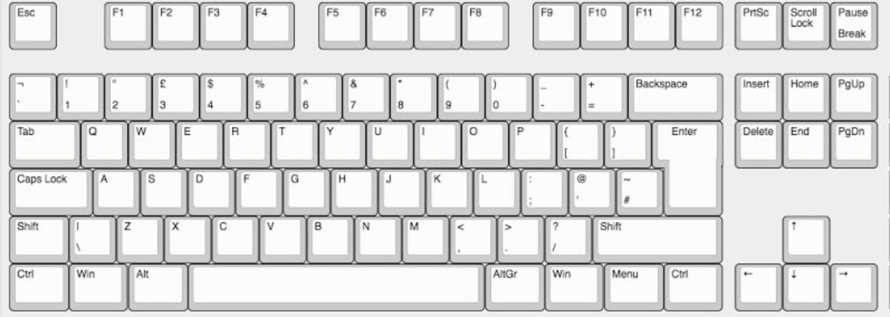
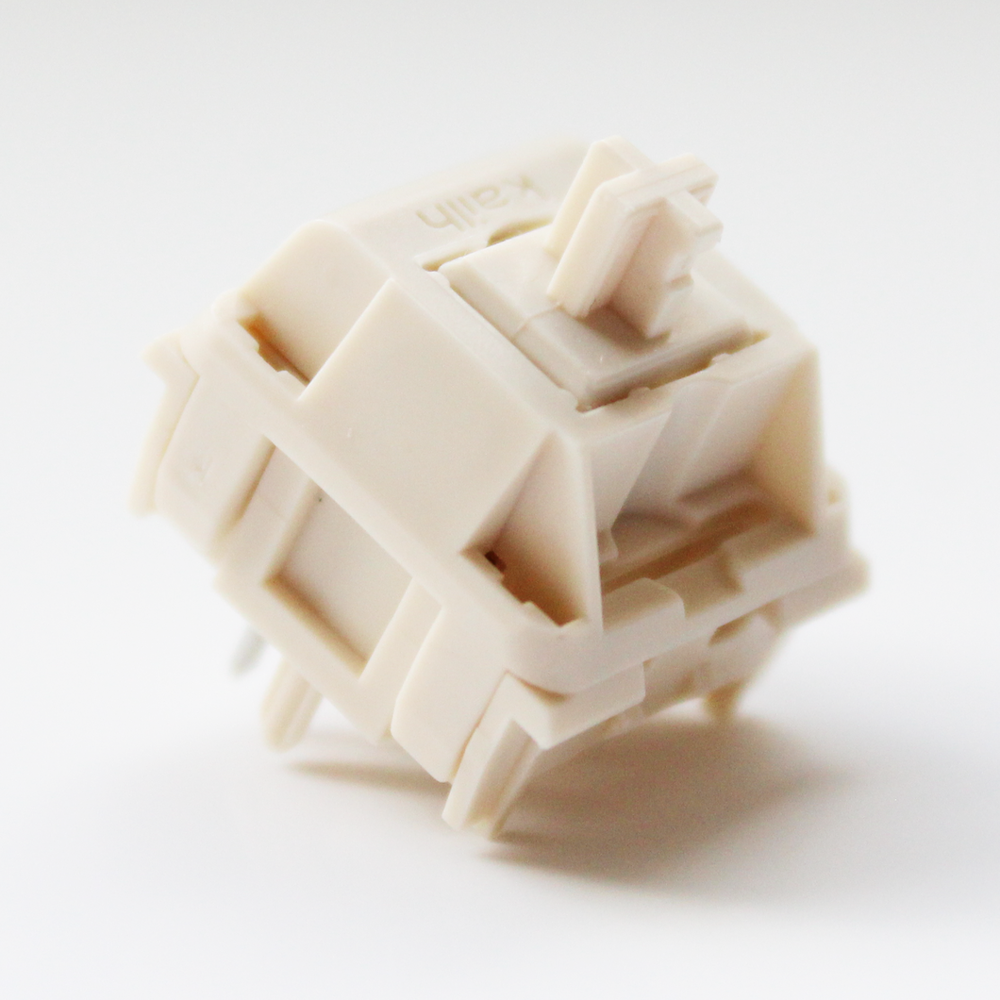
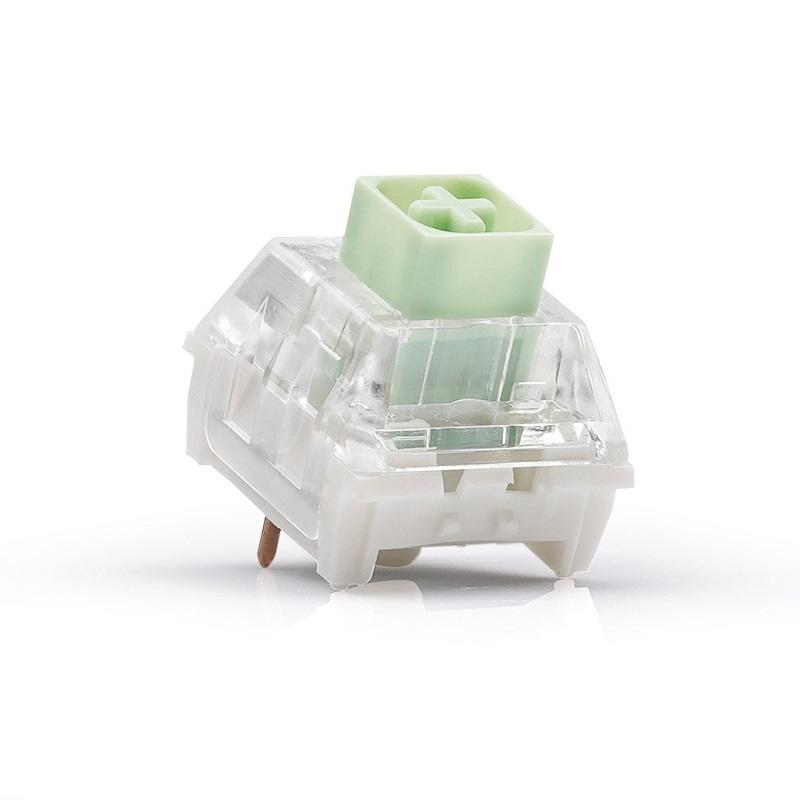
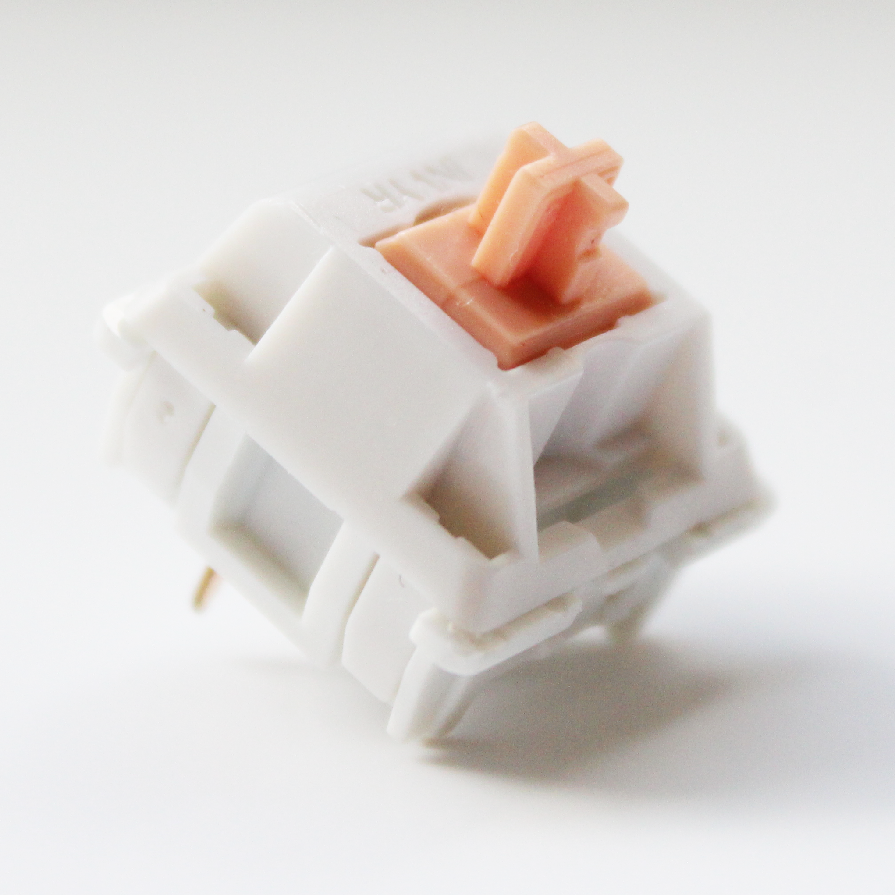

Keyboards
Mechanical Keyboards are growing in popularity as industry professionals, gamers, and students
are beginning to take interest in their functionality and feel. With its vast and customizable
features, mechanical keyboards allow users to express their creative and unique styles.
Layouts
ANSI is a very common and favorited layout used throughout the United States. Noteable features include its much larger 'left-shift' key, single-row 'enter/return' key, and it's '@' symbol being used as a layer on the '2' key. Outside of the ISO layout, the HHKB (Happy Hacking Keyboard) layout is also very popular amongst the coding community.
ISO is a very popular keyboard layout used outside of the United States, especially in places like Europe. With it's distinct layout, it makes typing in other languages a much smoother process. It has key features like the gigantic double-row 'enter/return' key, it's fourth row 'backslash' key, and its tiny 'left-shift' key.
Switches
-

Linear Switches
Linear switches are very smooth with with no bump when pressing down. Linear switches have a very short actuation point and often are the preferred choice of professional gamers by nature of the switches speed. The switches shown above are the very popular NovelKey Cream Switches.
-

Clicky Switches
Clicky switches are exactly what they say they are...CLICKY! With their loud and recognizable sound, clicky switches are much more of a personal preference in terms of its popularity. Users tend to either love clicky switches or hate them. Shown above are the notorious Box Jade Switches.
-

Tactile Switches
Tactile switches are by far the most popular type of switch in the keyboard community. Known for it's signature bump and thocky noise, tactile switches provide both a satisfying feel and sound that users can't get enough of. Shown above are the cream of the crop Holy Panda Switches.
Keycaps
Keycaps are what allow keyboard users to express their true sense of style. With so many different types of keycaps, builders are really able to narrow down their prefernces. Keycaps are most commonly known for their Cherry profile, but also have other shapes and sizes in profiles like SA, MT3, and DSA. Different profiles lead to different sounds, making the keyboard building experience that much more personal! Highlighted below is my favorite set: GMK Striker.